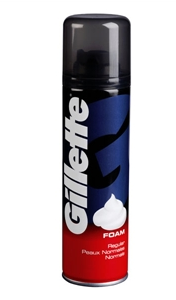
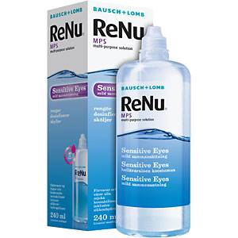
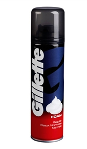
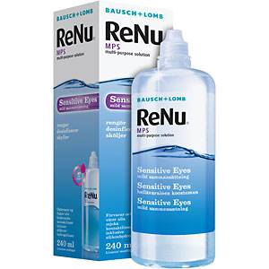

Nu så tänkte jag visa ett bra slime recept
- hobbylim det finns o köpa på panduro och TGR (pva lim)
- raklödder,rakgel(finns o köpa på alla matafärer)
- jag brukar använda vatten med bikarbonat jag tycker att slimet blir lite bättre men man behöver inte ha i en bikarbonat blandning
- om man vill så kan man ha i body lotion
- linsvätska (finns o köpa på apoteket)
- om man vill så kan man ha i karamelfärg på sin men det är valfrit
- nu tänkte jag berätta hur ni kan göra
- man börjar med att lägga i erat hobby lim/pva lim och sen lägger ni in erat raklödder eller rakgel.sen så blandar ni så att det blir till en smet och sen lägger du i din bikarbonat blandning och blandar. sen så kan man lägga body lotion om man vill. body lotion gör så att slimet blir stretchigt.i slutet så läger man i linsvätska som gör hela grejen.sen är du klar.du har fått till en fluffy slime.och om man vill så kan man färga sit slime.Här är etbra ett bra slime recept

 


